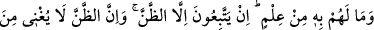
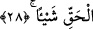

cezâlandırılmaya müstehak olduklarını bildirmek içindir.
İbn Şeyh şöyle demiştir: Şâyet bir kişi tarafından: “Müşriklerin melekler için:
“Bunlar Allah katındaki bizim şefâatçilerimizdir” demelerine ve ölülerinin kabirlerinin
başına, haşrolunacağı zaman onun üzerinde haşr yerine gitsin inancıyla bineğini
bağlamaları âdetlerine bakılınca nasıl olur da onların âhirete îman etmedikleri
söylenebilir? diye bir soru sorulduğunda buna ben şöyle cevap veririm: “Onlar âhirete
kat’î bir îmanla inanmamışlar, bilakis “biz haşrolunmayacağız” dahi demişlerdir. Şâyet
onların melekler hakkında: “Bunlar bizim şefâatçilerimizdir” sözleri mevcutsa peki
“Kıyâmetin kopacağını sanmıyorum; (kıyâmet kopsa da) Rabb’ime götürülmüş
olsam bile muhakkak O’nun yanında benim için daha güzel şeyler vardır” der”
(Fussilet, 41/50) âyetinde buyrulan sözleri ne ile açıklanabilir? Onlar âhirete,
peygamberlerin bildirdiği şekilde inanmıyorlar.”
Şunu bil ki, melekler ne erkek, ne de dişidirler. Bir hadis-i şerifte: “Cebrâîl vahyin
ilk yıllarında bana gelip abdesti ve namazı öğretti. Abdestin (alınışının anlatımı)
bitmeden kısa bir süre önce de bir avuç su alarak avret mahalline serpti”
buyrulmuştur. Cebrâîl (a.s.)’in ve meleklerin fercinin bulunmaması hasebiyle ferc/avret
anlamında kullanılmıştır. Şâyet hadis-i şerifte Cebrâîl (a.s.) insan sûretinde tasvir
olunsa idi bu onun erkek veya dişi olduğuna delil olabilecekti. Ancak bu konuda ihtilaf
vardır. Çünkü Cebrâîl (a.s.)’ın hünsâlar için de denildiği gibi erkek veya dişinin aletine
benzemeyen bir âletinin olması ve bunun da adına ferc denilmesi muhtemel olabilir.
Bazı âlimler de ferc kelimesini peştemalın paçasındaki aralık mânâsına
hamletmişlerdir.
28. Halbuki onların bu hususta hiç bilgileri yoktur. Sadece zanna uyuyorlar. Zan
ise hiç şüphesiz hakikat bakımından bir şey ifâde etmez.
“Halbuki onların bu hususta hiç bilgileri yoktur.” Yâni o müşrikler kat’î surette hiç
bir bilgileri bulunmadan melekler hakkında konuşuyorlar, takdirindedir. “Sadece zanna
uyuyorlar. Zan ise hiç şüphesiz hakikat bakımından bir şey ifâde etmez.” Gerçek
fayda kazandırmaz. Zira bir şeyin hakîkati anlamından ibaret olan hak, ancak ilim ile
mûteber bir idrake kavuşur. Zan ise kesin inancı gerektiren itikadi meselelerde önem
verilmeyen, ancak usûl-i fıkhın mes’eleleri gibi dînin pratiğe yönelik uygulamaları ve
buna götüren sebeplerde ele alınan bir husustur.
Bu âyette zannın zemmine ve mukallidin îmânının bulunmadığına işâret edilmektedir.
Bazıları âyetteki hakkın ilim mânâsında olduğunu söyleyip bu cümlenin: “Zan hiç bir
şekilde ilmin yerini tutmaz” takdirinde bulunduğunu öne sürmüş, bazıları da hakkın